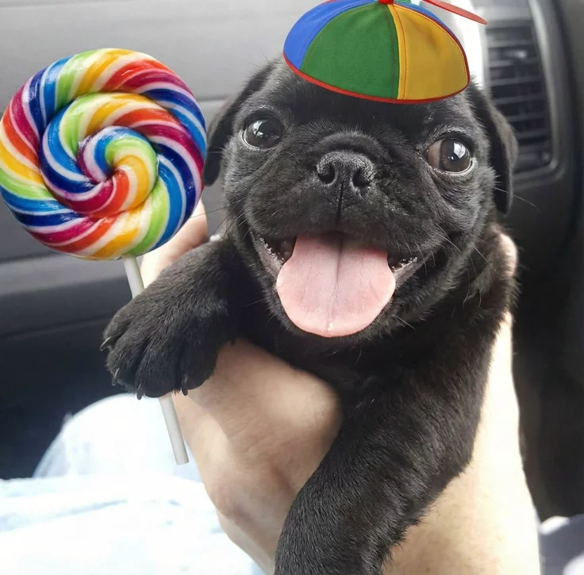

Bem-vindo!
Este é um site simples criado em HTML.
Saiba maisconheça a Brendinha

+55 47 984793962contato
Qual nome completo da Brendinha?
Brenda natiely mendesOnde a Brendinha mora?
Em Santa Catarina, Rio do Sul, no bairro cobras
O que a Brendinha gosta de fazer no seu tempo livre?
Comer, jogar, ver videos no youtube, dormir, estudar programação, cozinhar, ver tik tok, incomodar os outros e principalmente sua familia
Qual são os sonhos de Brendinha?
Ser arquiteta, ser designer, casar com o Vitor, ser rica,